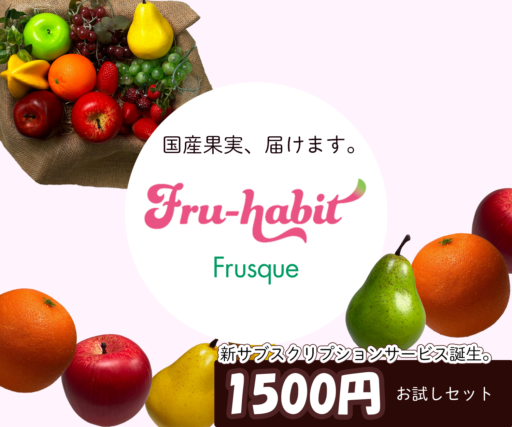

フルーツサブスクリプションサービス「Fru-habit（フルハビ）」の初回1,500円お試しセットの申込み促進を目的とした広告バナーを制作しました。 食品ロス削減を目的とした規格外フルーツを活用するサービスの魅力を伝えつつ、ユーザーが気軽にサービスを試せる価格であることを視覚的に分かりやすく訴求することを意識しました。
担当
リサーチ5H画像加工・選定5H
バナーの目的
申込サイトへの誘導をし、認知をひろげることによって新規獲得につなげ、農産物の廃棄を可能な限り少なくしていくこと。 かつ、気軽にお手頃な価格でビタミンに富んだフルーツを食べる習慣をつけてもらうきっかけを作ること。
ターゲット
多忙で買い物に行く時間が限られる20～40代の男女。 健康に興味のある女性。 家族でフルーツを共有したい、もしくは子育て中で国産の果物にこだわりのある母親世代。デザインについて
商品の魅力が一目で伝わるよう、色鮮やかなフルーツの写真を大きく配置し、視覚的にサービス内容を理解できる構成にしました。 背景には柔らかい色合いを使用することで、フルーツの自然なイメージと安心感を表現しています。 また、ユーザーの目線が中央に集まるよう円形のデザインを配置し、ブランドロゴとキャッチコピーを強調しました。 さらに、「1500円お試しセット」という価格情報を下部に大きく配置することで、サービスの手軽さとお得感を分かりやすく伝えることを意識しました。 全体として、親しみやすさと視認性を重視し、初めてサービスを見るユーザーでも内容を直感的に理解できるデザインを目指しました。
課題と解決
規格外フルーツのサブスクリプションサービスという新しい仕組みなので、 ユーザーがサービス内容を理解しづらいと考えました。そのため、フルーツの写真をメインに配置し、 価格情報を強調することで「お得にフルーツを試せるサービス」であることが直感的に伝わるデザインにしました。
制作で意識したこと
サービスの魅力が見て直観的に伝わることを大事に設計しました。 情報量を増やしすぎないようにシンプルな構成を意識しています。 また、ユーザーの視線が自然に「フルーツ → キャッチコピー → 価格情報」の順に流れるようなレイアウトにしました。